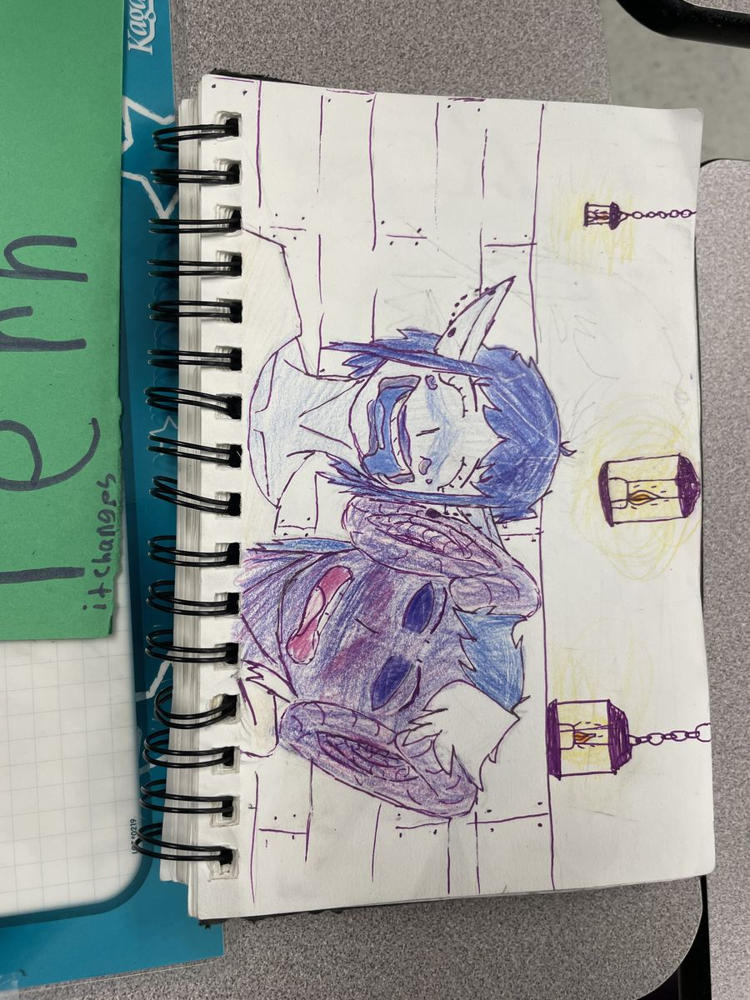

I keep thinking about the hoodie.
Ezekiel pulled it over his face on the first day and stayed like that, a kind of soft refusal, and nobody made him take it off. The instructors tried talking to him, and when it didn't work, they left him alone. I watched this happen and felt something strange move through me. Where I grew up, that would not have been allowed. Distraction was punished, sometimes loudly, sometimes worse. I had been on the receiving end of that once or twice, and I still know what it feels like to be corrected in front of people. Here, the class just went on. He sat there inside his hoodie and the world kept moving and no one made it mean anything.
I'm not sure why I kept trying with him. I think I just didn't want him to disappear into the two weeks.
He was drawing on his phone, this careful 2D face, and I told him it looked good. Not to get something from him, just because it did. He looked up for a second. Over the next few days I found out he had a YouTube channel with over three thousand subscribers, that he'd been doing this art for four years, that he had no interest in learning it from anyone else. He didn't want a summer school or a mentor. He just wanted the thing itself, on his own terms. He was also a middle child with two sisters who needed a lot. I don't know his life. I could be completely wrong about all of it. But I thought about it more than I expected to.
By the last day he said the camp might be fun. There were breaks, he said. The last one was just lectures.
I don't know what to do with that exactly. I'm still not sure I reached him at all. But he said it, and I heard it.
There's something that happens when you watch a kid think through a problem they don't have the language for yet. Lily started drawing probability trees before Dr. Rebekah had finished explaining what they were. She didn't know that's what she was doing. She was just following something. Evie figured out the 2ⁿ pattern on her own and announced it quietly, like she wasn't sure it counted. Fern spent a long time on the four fours problem and only called Cooper over when she was ready, not when she got stuck. There's a difference, and I noticed it.
Payton went around correcting everyone else's Venn diagrams with total confidence, and I could see she had made the same mistake herself. But she knew the shape of the thing. She knew where it was supposed to go. I kept thinking if she ever ends up in a discrete math class, it will all just land, the way things land when you've been circling them for a while without knowing it.

The students kept reading A ∪ B as "A universe B." The union symbol and the abbreviation for universal set look the same to someone who doesn't know yet that they're different. It made complete sense to me. That's not confusion, that's a reasonable inference from available information. I found myself more interested in that than in whether they got the answer right.
Getting to Fern was slow and I had to earn it.
The first day, Dr. Rebekah complimented her dress and Fern's whole body said: I have not let you in yet. It wasn't rude. It was just clear. She had this perimeter and she kept it, and I respected that without saying so.
By the fourth day she was wearing a hat that looked like it belonged in a painting, the kind where someone is seated at a canvas with very soft light coming from the side. I sat next to her and asked what she was drawing and she said no. I didn't move. I just started asking about the things she liked instead, and slowly she let me in through a side door.
She lives in her diary. She has four brothers. She likes plants more than people, she told me, and I half believed her. She has one plant in her room that's easy to take care of. Her backyard is unmaintained because her dad never got around to it, which she's turned into a good thing somehow, all this wild space to move around in. She told me about a plant she got for a dollar that flips its leaves when it needs water. She said it like it was a small miracle.

After about an hour of this I said, carefully, you have a pretty nice hat. She smiled and said thank you. I said it reminded me of the Renaissance. She smiled more. And then, without me asking, she turned the diary around and showed me what was inside.
Two elf brothers. One of them was 107. In her world elves don't become adults until they're 100, and they can change their names whenever they want. I asked why. She said, just because I feel like it. I think about that answer sometimes.

I asked if I could take her photo. She nodded. I did. Later I looked up the meaning of her name in the urban dictionary, just curious, not expecting anything. The first definition said: a person who loves drawing. She read the whole thing.
The skincare session happened during lunch on the fourth day and I did not expect it to mean as much as it did.

Lily brought seven face masks. Payton timed everything exactly. You started at 10:43, she said. You cannot take it off before 11:03. Lily tried to cut my nails with this tiny cutter she'd secretly brought from home and explained that nail art requires patience, that you dip the brush after every stroke, that you cannot rush the drying. I already knew patience was important but I didn't know it applied here too, in this specific way, with this much precision.

Payton said she liked how chill I was about it. Her dad and brother would never let her do this. Evie said boys their age would call it cringe.
Not only your age, I thought.
At some point during all of this, in the easy way that twelve-year-olds move between the trivial and the enormous, Lily mentioned that she lived with adopted parents now. She said it casually, not for sympathy, not dramatically, just as a fact alongside other facts. I didn't say anything for a moment. Then we kept going. But there's something about the way she said it that I haven't been able to put down.

On the last day before the break, they served cheese sticks and milk and strawberries.
I have a memory that strawberries bring up whether I want them to or not.
Kalyann and I grew up together in Nepal, close enough that the word friend never quite covered it. He was more like a brother, the kind you don't choose but who shows up in every important memory anyway. There was a small balcony at home where my mother kept plants, and one year he and I planted a strawberry in a little vase. We had no idea what we were doing. We just watered it and waited. After a few months something grew.
The first one was small and reddish-pink and we couldn't believe it. I called for Kalyann and he came running. After that, whenever a new one appeared, whoever found it first would call the other. We'd share it. If one of us wasn't home, we waited.
We haven't talked in a long time now. That's not a dramatic thing, just a quiet one. People grow in different directions and sometimes there's no event you can point to, just a slow widening of the distance until one day you realize the person who used to come running when you called is someone you haven't heard from in years. I still think about him when I see strawberries. I don't think that will stop.
I thought about this sitting at that lunch table, surrounded by kids who were in the middle of things they didn't fully understand yet, which I think is just what being twelve is. Waiting for the face mask to set. Waiting for the mathematics to click, for the symbols to stop looking the same, for someone to stay long enough that you can show them your diary.
I don't know what I taught anyone those two weeks. I'm not sure that was the point. I think I just tried to stay, and pay attention, and not leave too early.
Some things need that. Just someone who doesn't leave before it's ready.